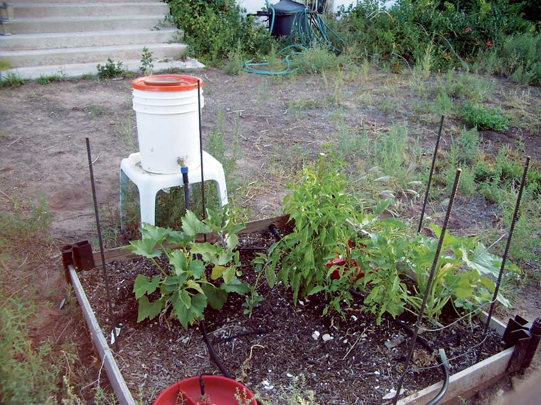

I’ve always wanted to do more with graywater (also spelled greywater, gray water and grey water) - waste water from dishwashing, laundry and bathing - but as a renter, I wanted to invest my money and energy in a way that was more portable than traditional systems. I started by looking into rain barrels as a way to cache water and was amazed at how expensive they were. Then I found a few 5-gallon buckets at a construction site, and came up with this simple graywater setup that has worked well for me for the past two summers.
The setup is a 5-gallon bucket with a tap inserted, hooked up to a commercial drip irrigation system in my raised garden beds. I use one bucket per 2-foot-square bed.
I clean the buckets, drill a hole, and insert a garden-hose-sized tap. To keep the tap from leaking, I cover the thread with Teflon tape, put a washer on the inside of the bucket and use a plastic hose coupler to secure the tap. I hook this up to the drip irrigation system.
The drip irrigation kit was the most expensive part of this system at about $25. The tap and accessories totaled a little less than $6. I live in northern Arizona, and during the heat of high summer I use a full bucket a day in my sunniest bed.
The source of the graywater is the leftover water from washing dishes, which I collect in another 5-gallon bucket I keep by the sink.
|
 DANA COHEN A simple, portable watering system for a small garden. |
|
|